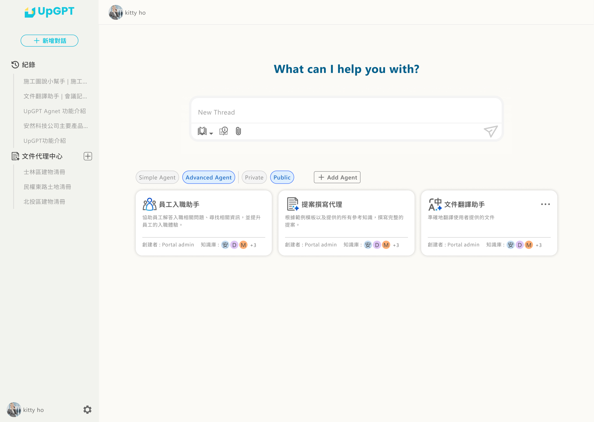
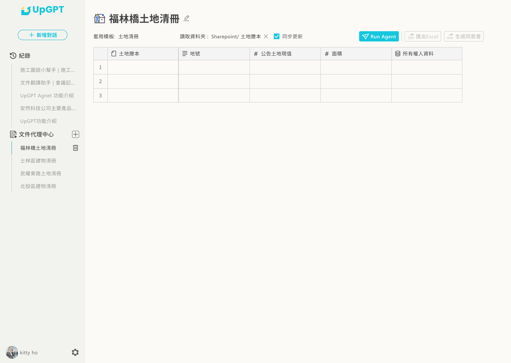

Overview
企業能部署專屬的 AI 助理、自動化工作流、內部知識庫問答系統。 作為主要產品設計師，我負責從概念、理解開發需求、將其轉變成介面、建立設計系統，到持續的產品體驗優化。
Challenge
使用者端：複雜概念的心智模型
AI Agent 這個概念對大多數使用者來說是全新的 — Prompt、Tools、Memory、Workflow 這些技術語彙 若直接暴露在介面上，會造成極大的認知負擔。如何把複雜的技術概念「翻譯」成使用者看得懂的視覺語言，是最大挑戰。
產品端：從 0 開始建立設計系統
一個 SaaS 產品會有大量重複的元件（表單、表格、對話介面、節點編輯器）， 我們必須在早期就建立一套可擴充的設計系統，否則產品快速迭代時會累積大量的視覺債。
Process
1. 使用者研究與任務分析
透過訪談 10+ 位目標使用者（業務主管、行銷、客服負責人），建立出 3 個核心 Persona， 並拆解出他們最想自動化的 20+ 個任務情境，做為核心功能的優先順序依據。
2. 資訊架構與原型
以「Agent → Workflow → Task」為核心的三層資訊架構，搭配「Playground 試玩 → 發佈」的雙階段操作流程， 讓使用者可以在零風險的狀態下探索能力邊界。
3. 設計系統與元件庫
建立 100+ 個 Figma 元件，包含 tokens、typography、spacing、dark/light mode、8 種 node 類型， 供設計與工程團隊共享使用。
AI Agent 執行工作流 — 實際案例
以下是 Work Agent 文件代理中心的完整執行流程，展示如何利用 AI 自動化檔案分析和資訊提取：






Solution
- Agent 設定向導式流程：將 Agent 建立拆成 4 步驟，每一步只問一件事
- Workflow 視覺化編輯器：用節點式編輯器取代純文字 Prompt，讓流程一目瞭然
- Playground 即時試玩：任何調整都能立即看到效果，縮短迭代週期
- 成效儀表板：任務成功率、對話品質、Token 用量一目瞭然
點擊下方按鈕查看 Agent 在不同階段的工作狀態，包含「正在生成中」、「生成完成」及「錯誤降級」等實際場景。
Results
平均 Agent 建立時間
使用者任務完成率
平均使用者體驗評分
Design System — 統一的設計語言
Portal、Desktop 與 Work Agent 共享同一套設計系統，但針對各使用情境的特性做出差異化的背景色和品牌色。 這確保了三個版本既有視覺一致性，又能展現各自的功能特色。